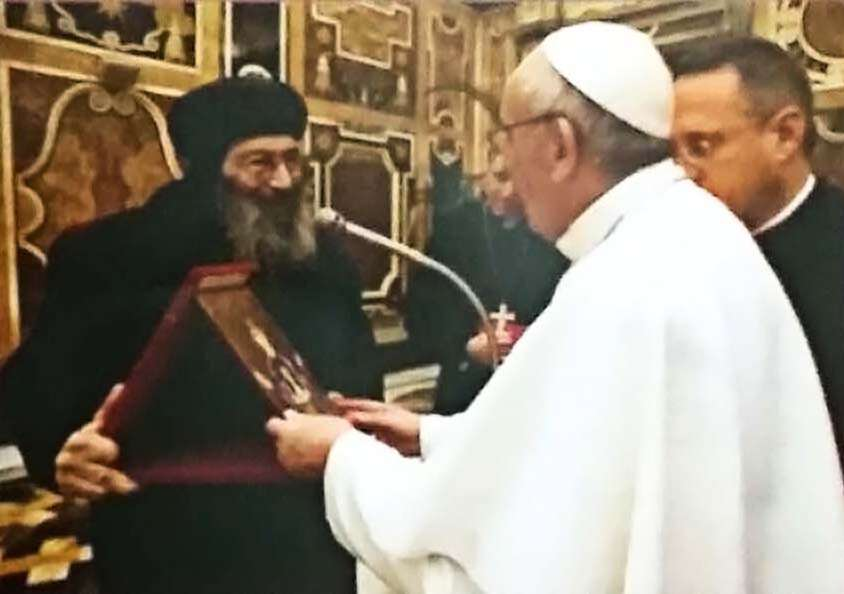

10 Das 14. Jahrestreffen des internationalen Ausschusses für Dialog zwischen den orientalisch- orthodoxen Kirchen und der katholischen Kirche Dieses vierzehnte Jahrestreffen fand in Rom in der Zeit vom 22. bis 28. Januar 2017 statt. Diskutiert wurden in diesem Jahr theologische und historische Gesichtspunkte des Geheimnisses der Eucharistie. Am Freitag, dem 26. Januar begrüßte der Gastgeber, Seine Heiligkeit, Papst von Rom, die Mitglieder des Ausschusses mit einer Begrüßungsrede. Der koptische Dialogsbeauftragte, Bishof Bishoy, Erzbischof von Damietta und Kafr El-Sheikh, übergab dem Papst im Namen unserer Kirchen eine koptische Ikone der Jungfrau Maria. Seine Heiligkeit Papst Franziskus bat den Erzbischof Bishoy, seine Grüße an Seine Heiligkeit Papst von Alexandrien Tawadros II auszurichten. Erzbischof Bishoy erwähnte zu diesem Anlass, dass die koptische Kirche am 10. Mai jedes Jahres das Fest der brüderlichen Liebe feiert. Es ist der Tag, an dem Papst Shenouda III im Jahr 1973 und 40 Jahre danach Papst Tawadros II im Jahr 2013 den Vatikan besuchte. http://stmina-magazin.de/das-14-jahrestreffen-des-internationalen-ausschusses/#sthash.7jgMpBQF.dpuf
St. Markus · 2017 · Deutsch
Das 14. Jahrestreffen des internationalen Ausschusses für Dialog
Ausgabe 2 · Seite 10
